<div class="svd-simulator-main">
    <!-- ko if: koHasFrame -->
    <div class="svd-simulator-wrapper"
        data-bind="style: { width: koSimulatorFrame().frameWidth + 'px', height: koSimulatorFrame().frameHeight + 'px' }">
        
        
        <div class="svd-simulator"
            data-bind="style: { width: koSimulatorFrame().width / koSimulatorFrame().scale + 'px', height: koSimulatorFrame().height / koSimulatorFrame().scale + 'px', top: koSimulatorFrame().frameY + 'px', left: koSimulatorFrame().frameX + 'px', transform: 'scale(' + koSimulatorFrame().scale + ')' }">
            <survey-widget class="svd-simulator-content" params="survey: koSurvey"></survey-widget>
        </div>
    </div>
    <!-- /ko -->
    <!-- ko ifnot: koHasFrame -->
    <survey-widget class="svd-simulator-content" params="survey: koSurvey"></survey-widget>
    <!-- /ko -->
</div>